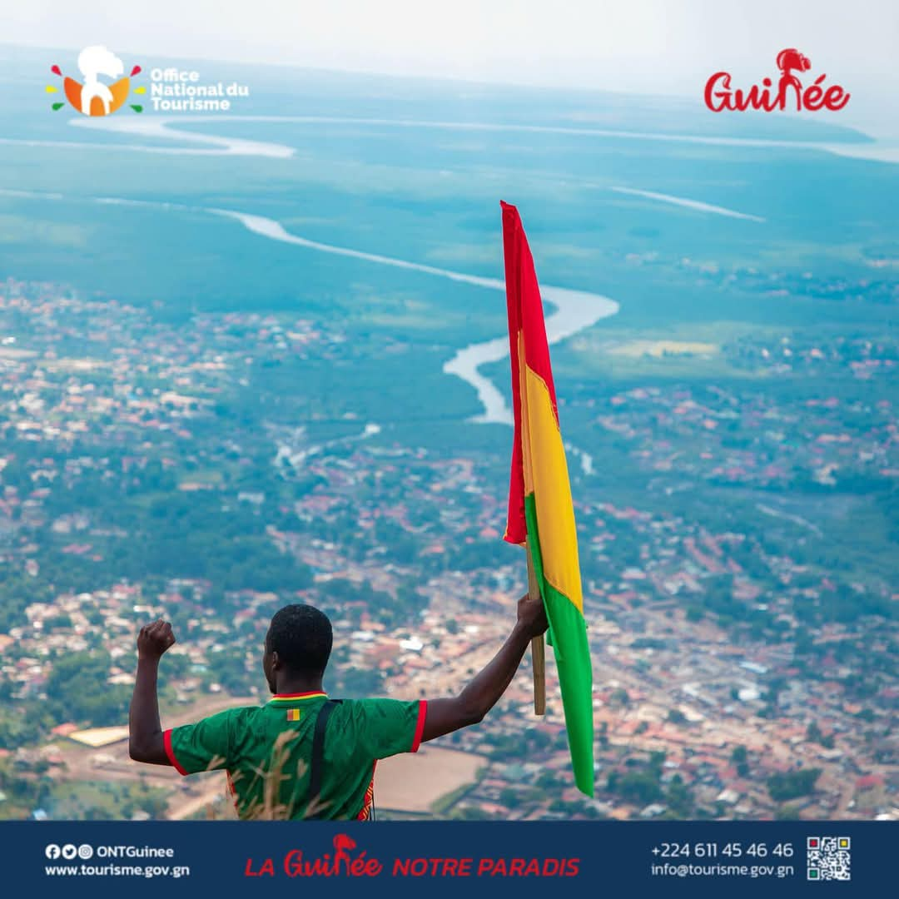

Nos Destinations Incontournables
Laissez-vous charmer par la diversité des paysages guinéens.

Richesses Culturelles et Patrimoniales
Plongez au cœur des traditions et de l'histoire guinéenne.
Rythmes et Danses
L'âme de la Guinée exprimée par la musique et la danse.
Artisanat Local
Découvrez la finesse des créations locales : tissus, sculptures...
Sites Historiques
Vestiges du passé qui racontent l'histoire de la Guinée.
Pourquoi la Guinée ? Témoignages et Faits

"J'ai été émerveillé par la gentillesse des gens et la beauté des paysages. Un voyage inoubliable !"
- Jean Dupont, France
"Les cascades du Fouta sont à couper le souffle, et l'accueil est incomparable."
- Sarah Lee, Canada+100
Cascades et chutes d'eau magnifiques
Diversité Culturelle
Plus de 24 groupes ethniques
Biodiversité Riche
Parcs nationaux et espèces uniques
Prêt à l'aventure ?
Commencez à planifier votre voyage de rêve en Guinée dès aujourd'hui.
Contactez un expert local Télécharger le guide